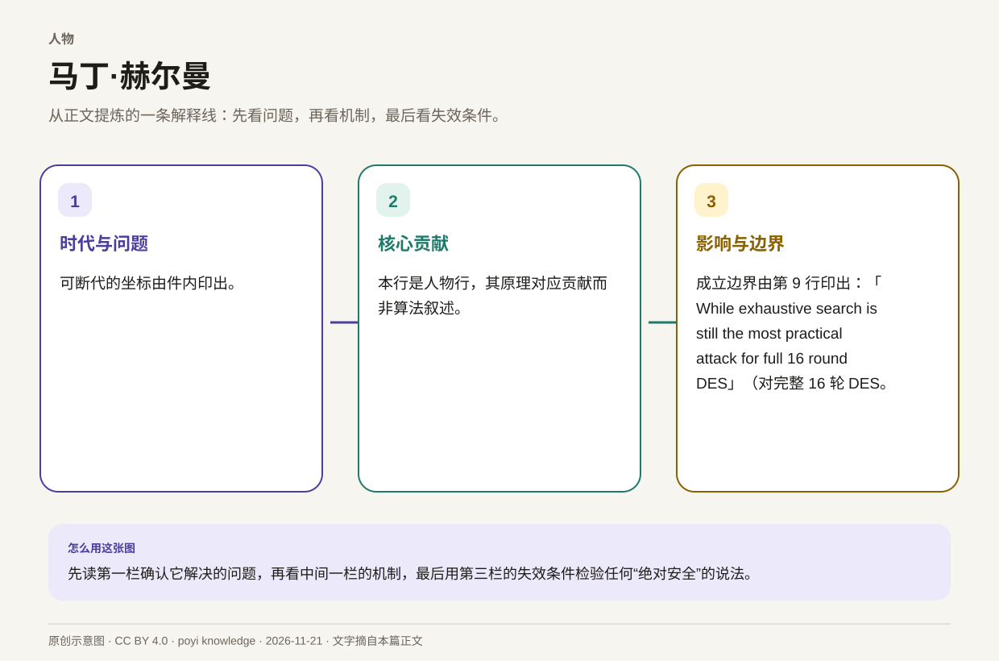

原理与机制
人物：马丁·赫尔曼（Martin Hellman）。本行是人物行，其原理对应贡献而非算法叙述。留存件第 1 行印出标题「Differential-Linear Cryptanalysis」（差分-线性密码分析），第 2 行印出署名「Susan K.Langfordl and Martin E.Hellman」（Langford 后的 l 是抽取件把上标 1 印作字母 l，原样保留）。因此该条目把赫尔曼定位为差分-线性密码分析的共同作者（与 Susan K.Langford 合著），不把共同成果独归于本行人物；该攻击的机制细节另由已认可的 attack--differential-linear 行承载，本行不重复其完整叙述。

为什么重要
其贡献由第 5 行摘要印出：「This paper introduces a new chosen text attack on iterated cryptosystems, such as the Data Encryption Standard (DES).」（本文提出一种新的针对迭代密码系统——如数据加密标准 DES——的选择文本攻击）。该条目只主张该印出的贡献陈述，不把它夸大为对完整 DES 的破解。
应用与实例
其效果由第 5 行印出：「recovering 10 bits of key with 80% probability of success using only 512 chosen plaintexts」（仅用 512 个选择明文即以 80% 成功率恢复 10 位密钥），同段并印该攻击在一台 SUN-4 工作站上「takes less than 10 seconds」。该条目只陈述这些印出的量，不外推为对更多密钥位或更多轮的成功保证。
边界与攻击面
成立边界由第 9 行印出：「While exhaustive search is still the most practical attack for full 16 round DES」（对完整 16 轮 DES，穷举仍是最实用的攻击）——即本攻击针对的是减轮 DES（摘要中的 8 轮），并未取代对完整 DES 的穷举。该条目据此只主张减轮攻击的贡献，不主张对完整 DES 的破解。
历史与背景
可断代的坐标由件内印出。第 15 行印出会议文献行「Advances in Cryptology - CRYPT0 '94, LNCS 839, pp.17-25, 1994」（CRYPT0 的 0 是抽取件把字母 O 印作数字 0，原样保留），即本文载于 1994 年 CRYPTO 会议录。该条目据此把该工作断代到 1994 年；不另推算生年，因为留存件未印。
可核角色与证据链
马丁·赫尔曼归入破译方法，登记时代为标准化时代。该条目只登记有来源支持的教育/任职机构、公开文本或专利、参与的标准/机器/事件与可核同行评价。来源账本包括：Wikipedia search entry for 马丁·赫尔曼；MacTutor History of Mathematics Archive, University of St Andrews；MacTutor biography: Martin Hellman。
没有来源支持的出生、死亡、家庭、师承、奖项、论文数量和任职日期不补写；同名人物不合并；后人归功与本人文本分开。
逐步示例与核验
角色关系模型
只登记四类关系：教育/任职机构、公开文本或专利、参与的标准/机器/事件、可核同行评价。每条关系都要有来源；没有来源的师承、奖项和私生活不进入模型。
参考出处
- Wikipedia search entry for 马丁·赫尔曼. https://zh.wikipedia.org/w/index.php?search=%E9%A9%AC%E4%B8%81%C2%B7%E8%B5%AB%E5%B0%94%E6%9B%BC
- MacTutor History of Mathematics Archive, University of St Andrews. https://mathshistory.st-andrews.ac.uk/
- MacTutor biography: Martin Hellman. https://mathshistory.st-andrews.ac.uk/Biographies/Hellman/